<meta charset="utf-8">
<meta name="viewport" content="width=device-width, initial-scale=1">
<title>Summer Games II — gameplay</title>
<link rel="preconnect" href="https://fonts.googleapis.com">
<link rel="stylesheet" href="https://fonts.googleapis.com/css2?family=Lato:wght@400;700;900&family=IBM+Plex+Mono:wght@400;500&display=swap">
<style>
:root{
  --bg:#23262d; --paper:#e9e7e1; --surface:#ffffff; --surface-2:#f1efea; --line:#d5d3cc; --line-soft:#e0ded8;
  --ink:#2f3136; --ink-soft:#55585f; --ink-mute:#80838a;
  --link:#1f5fa8; --link-hover:#154480; --accent:#1f5fa8;
  --amber:#c25a00; --cyan:#1f5fa8; --coral:#d04a3a; --green:#2a8a4a; --violet:#4a5bd6; --hl:#fff0c2;
  --chip:#2f3136; --chip-ink:#ffffff;
  --c64blue:#40318d; --c64grey:#686868;
  --fd:'Lato',system-ui,sans-serif; --fb:'Lato',system-ui,sans-serif; --fm:'IBM Plex Mono',ui-monospace,Menlo,monospace;
  --col:1080px; --gx:68px; --fs:17px; --lh:1.6; --hw:900; --h1:46px; --h2:26px; --sy:48px; --pp:26px; --r:10px;
  --plate-shadow:0 1px 2px rgba(0,0,0,.05),0 4px 14px rgba(0,0,0,.05);
}
*{box-sizing:border-box}
html{background:var(--bg);min-height:100%}
body{background:var(--paper);color:var(--ink);font-family:var(--fb);font-size:var(--fs);line-height:var(--lh);max-width:var(--col);margin:0 auto;min-height:100vh;padding:0 0 4rem}
h1,h2,h3{font-weight:var(--hw);letter-spacing:-.01em;text-wrap:balance;color:var(--ink);margin:0}
.wrap{padding:0 var(--gx)}
.hero{padding:48px var(--gx) 8px;text-align:left}
.eyebrow{font-family:var(--fm);font-size:12px;letter-spacing:.08em;text-transform:uppercase;color:var(--ink-mute);margin:0 0 10px}
.hero h1{font-size:var(--h1);line-height:1.15;letter-spacing:-.02em;margin:0 0 14px}
.hero .sub{margin:0 0 .6em;color:var(--ink-soft)}
section{padding:var(--sy) 0 24px}
section:last-of-type{border-bottom:none}
.fig{font-family:var(--fm);font-size:12px;letter-spacing:.08em;text-transform:uppercase;color:var(--ink-mute);margin:0 0 10px}
h2.t{font-size:var(--h2);margin-bottom:12px}
.lede{color:var(--ink-soft);margin:0 0 30px}
.plate{background:var(--surface);border:1px solid var(--line);border-radius:var(--r);padding:var(--pp);box-shadow:var(--plate-shadow)}
.cap{font-size:14px;color:var(--ink-mute);margin-top:14px;line-height:1.55}
.cap b{color:var(--ink);font-weight:700}
code{font-family:var(--fm);font-size:.82em;background:var(--chip);color:var(--chip-ink);border-radius:4px;padding:2px 6px;overflow-wrap:break-word;-webkit-box-decoration-break:clone;box-decoration-break:clone}

.ft-grid{display:grid;gap:6px}
.ft-grid button{padding:0;position:relative;line-height:0}
.ft-grid canvas{width:100%;image-rendering:pixelated;display:block}
.ft-tag{position:absolute;left:3px;top:3px;font:500 11px/1.3 var(--fm);background:rgba(255,255,255,.88);color:var(--ink);border-radius:3px;padding:1px 4px}
.ft-mark{position:absolute;right:3px;bottom:3px;font:500 10px/1.3 var(--fm);background:var(--chip);color:var(--chip-ink);border-radius:3px;padding:1px 4px}
.ft-big canvas{width:100%;max-width:768px;image-rendering:pixelated;display:block;margin:0 auto}
.ft-table{border-collapse:collapse;font-size:14px;width:100%}
.ft-table td,.ft-table th{border-bottom:1px solid var(--line-soft);padding:5px 8px;text-align:left;vertical-align:top}
.ft-two{display:grid;grid-template-columns:1fr 1fr;gap:16px;align-items:start}
.ft-four{display:grid;grid-template-columns:repeat(3,1fr);gap:12px;margin:0 0 20px}
.ft-four .plate,.ft-two .plate{margin:0;padding:12px}
.ft-shot,.ft-px{width:100%;height:auto;image-rendering:pixelated;display:block}
.ft-wide{max-width:960px;margin:0 auto}
.plate{margin:0 0 22px}
.ft-scroll{overflow-x:auto}
.ft-lab{display:block;font-family:var(--fm);font-size:13px;color:var(--ink-soft);margin:6px 0}
.ft-range{width:100%;max-width:520px;display:block}
.ft-controls{display:grid;grid-template-columns:repeat(3,1fr);gap:14px;margin:12px 0 0}
.ft-read{font-family:var(--fm);font-size:14px;background:var(--surface-2);border-radius:6px;padding:10px 12px;margin:12px 0 0}
.ft-bar-out{height:12px;background:var(--surface-2);border:1px solid var(--line);border-radius:6px;overflow:hidden;margin:10px 0 0;max-width:520px}
.ft-bar-out div{height:100%;background:repeating-linear-gradient(45deg,var(--amber) 0 6px,#e08a3c 6px 12px)}
.ft-meter{position:relative;width:110px;height:18px;background:var(--surface-2);border:1px solid var(--line);border-radius:4px;overflow:hidden}
.ft-meter span{position:absolute;left:0;top:0;bottom:0;background:var(--cyan);opacity:.35}
.ft-meter b{position:relative;font:500 12px/18px var(--fm);padding-left:6px}
.ft-objs{white-space:nowrap}
.ft-obj{display:inline-flex;flex-direction:column;align-items:center;margin:0 3px 0 0;padding:2px;background:#222;border-radius:4px;vertical-align:top}
.ft-obj i{font:500 10px/1.2 var(--fm);color:#fff;font-style:normal}
.ft-swapped{outline:2px dashed var(--amber);outline-offset:-2px}
.ft-swapped i{text-decoration:line-through;text-decoration-color:var(--amber)}
.ft-table canvas{background:#222;border-radius:4px;image-rendering:pixelated}
.ft-dead{display:flex;flex-wrap:wrap;gap:6px;margin:12px 0 0}
.ft-dead button{font-size:12px;padding:4px 8px}
@media (max-width:760px){:root{--gx:16px;--h1:36px;--pp:14px}.ft-two,.ft-four,.ft-controls{grid-template-columns:1fr}}
sup.fn{font-size:.7em;line-height:0}
sup.fn a{text-decoration:none}
sup.fn + sup.fn::before{content:","}
.overview-shot{margin:22px 0}
.overview-shot img{width:100%;max-width:768px;height:auto;aspect-ratio:384/272;image-rendering:pixelated;display:block}
.overview-shot figcaption{font-size:14px;color:var(--ink-mute);margin-top:8px;max-width:768px}
</style>
<!-- tabs -->
<header class="hero">
  <p class="eyebrow">Commodore 64 · 1985 · Epyx</p>
  <h1>How the games are played</h1>
  <p class="sub">The menu, the countries, and the medals, then each of the eight events and the two swimming events, as their code runs them. Each heading's addresses link to the routine on the Source tab.</p>
</header>
<main class="wrap">

<section id="menu">
  <p class="fig">01 · The menu</p>
  <h2 class="t">Nine options, one loader</h2>
  <p>The menu offers nine options: compete in all the events, in some, or in one; practise one; set the number of joysticks; add the first Summer Games' events; see the world records; and watch the opening or the closing ceremony. The table of options is at <a href="source-menu.html#0FF5"><code>$0FF5</code></a>. Choosing an event loads it from the disk, and the game asks for the other side when the event is on it: Triple Jump, Rowing, Javelin and Show Jumping are on side 1, the rest on side 2.</p>
  <figure class="overview-shot">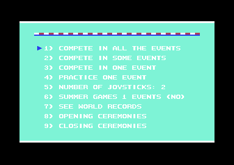<figcaption>The menu, drawn in its own character set.</figcaption></figure>
  <p>A competition (<a href="source-menu.html#10A3"><code>compete</code></a>) starts with the <a href="#opening">opening ceremony</a>, then runs the chosen events in order, the awards after each, the <a href="#champion">champion ceremony</a>, and the <a href="#closing">closing ceremony</a>. Practice (<a href="source-menu.html#102D"><code>opt_practice</code></a>) loads one event and lets one player try it as often as they like; it never reaches the awards, so no medal is given and no record saved.</p>
  <p>With two joysticks plugged in, the events where two players race at once (Rowing, Cycling, and the swimming events) let each player pick a stick by pressing its button at the start. With one joystick, each player races the computer in turn.</p>
</section>

<section id="countries">
  <p class="fig">02 · Players and countries</p>
  <h2 class="t">Eighteen flags and an Epyx anthem</h2>
  <p>Up to eight players each type a name of up to ten letters (<a href="source-menu.html#39DA"><code>name_entry</code></a>), and a name already taken is refused (<a href="source-menu.html#3C4F"><code>same_name</code></a>). Each then picks a country from eighteen flags, scrolled a page of nine at a time. The countries are stored as three-letter codes at <a href="source-menu.html#3CD1"><code>$3CD1</code></a>: the United States, France, Great Britain, West Germany, Austria, Italy, the Soviet Union, Canada, Mexico, Spain, Denmark, Australia, Japan, the Netherlands, Norway, Ireland, Brazil, and EPX, Epyx's own country, whose flag is a drawing and whose anthem is a tune of Epyx's.</p>
  <figure class="overview-shot">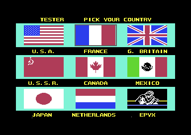<figcaption>The first page of flags. Pressing S plays the country's anthem before choosing it. All eighteen anthems are on the <a href="music.html#anthems">Music</a> tab.</figcaption></figure>
  <p>Each country's anthem is found through a table of tune numbers, <a href="source-menu.html#1E1A"><code>tune_by_country</code></a>. It has room for 24 numbers. The eighteen countries take 0 to 5, 8 to 13, and 16 to 21, and when the game wants the final standings' tune or the world records' it asks <a href="source-menu.html#1E01"><code>play_tune</code></a> for country 6 or 7, numbers no flag uses, so one routine plays the anthems and those two tunes.</p>
</section>

<section id="scoring">
  <p class="fig">03 · The awards</p>
  <h2 class="t">Five points for gold</h2>
  <p>After each event in a competition, <a href="source-menu.html#176C"><code>show_results</code></a> sorts the players by score and lists them with their countries. A score of zero, a disqualification, is written as FAULT. The first three get gold, silver, and bronze, worth 5, 3, and 1 points (<a href="source-menu.html#14AD"><code>score_medals</code></a>), and players with the same score share a place and a medal. Then the winner's flag waves over the screen while their anthem plays (<a href="source-menu.html#1800"><code>wave_flag</code></a>).</p>
  <p>Every event keeps its score in three bytes in the player's record, higher always better. An event timed by a clock, such as Rowing, stores its time turned upside down, so that the shortest time is the highest score.</p>
</section>

<section id="records">
  <p class="fig">04 · World records</p>
  <h2 class="t">Records saved to the disk</h2>
  <p>The winner of each event is checked against that event's world record (<a href="source-menu.html#1886"><code>check_record</code></a>). A score at least as good replaces it, and the game writes the records page back to the disk through its loader. Practice never gets that far, so a practice score is never a record. The menu's seventh option lists the eight records with their holders while a tune plays.</p>
</section>

<section id="champion">
  <p class="fig">05 · The champion</p>
  <h2 class="t">From last place up</h2>
  <p>When every event is done, <a href="source-menu.html#1101"><code>champion_ceremony</code></a> shows FINAL STANDINGS. It plays the standings' tune and adds the players one line at a time from last place up, with a pause before each from the tables that follow it. Last comes the champion, with their flag and anthem.</p>
</section>

<section id="opening">
  <p class="fig">06 · Opening ceremony</p>
  <h2 class="t">The torch and the doves</h2>
  <p>The torch bearer runs left across the stadium and up the steps (<a href="source-opening.html#7695"><code>runner_step</code></a>), holds five poses as he lights the flame (<a href="source-opening.html#784C"><code>lighting</code></a>), and eight doves climb and drift away (<a href="source-opening.html#778A"><code>dove_step</code></a>). A raster interrupt at line $6E splits the screen, so the doves use the eight sprites above it and the bearer and his torch the same eight below. The ceremony plays its own three-voice tune, and a press of the joystick ends it, but only after the stick has been let go: a button still held from the menu does not skip it.</p>
  <figure class="overview-shot"><figcaption>The flame lit. Its two flickering bytes are rewritten with random numbers each frame.</figcaption></figure>
</section>

<section id="triple-jump">
  <p class="fig">07 · Triple Jump</p>
  <h2 class="t">Hop, step, and jump</h2>
  <p>Fire starts the run (<a href="source-triple-jump.html#9FA2"><code>st_wait</code></a>), and the button pressed picks the joystick. At the board, right makes the hop and the step and left the jump, and up in the air gives lift. Overstepping the board, a hop or step left too late, or running past the line is a FAULT (<a href="source-triple-jump.html#A42E"><code>mark_fault</code></a>). In competition each player has three rounds and keeps the best (<a href="source-triple-jump.html#AF49"><code>tj_main</code></a>); in practice ANOTHER JUMP? asks for Y or N.</p>
  <figure class="overview-shot">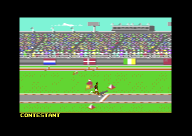<figcaption>The athlete is drawn in five sprites, from 100 frames stored packed. After each jump the monitor on the stand plays an animation, and the crowd cheers a jump of 15 metres or more.</figcaption></figure>
</section>

<section id="rowing">
  <p class="fig">08 · Rowing</p>
  <h2 class="t">A stroke in sixteen steps</h2>
  <p>Two boats race 250 metres, one in each half of the screen. Each half follows its own boat, and the other boat is drawn ahead or behind by the gap between them. The stick, read every fourth frame, steps a stroke of sixteen phases (<a href="source-rowing.html#9EE1"><code>read_stroke</code></a>): left lifts the oars and right pulls them through. Only the phases with the oars in the water add speed, and the drag grows with the speed, so rhythm beats force.</p>
  <figure class="overview-shot">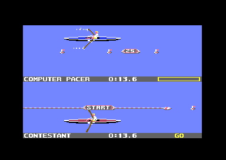<figcaption>The two lanes. The clock counts a tenth every 5 frames, which is real time on a European machine; three minutes is a FAULT.</figcaption></figure>
  <p>Against the computer the second boat is a pacer (<a href="source-rowing.html#A1B3"><code>pacer_choice</code></a>). Each phase it pulls the right way when a random number falls under its skill. The skill starts at 88 out of 256, so at first the pacer pulls the right way about a third of the time, and it rises by one each step it trails, and falls while it leads (<a href="source-rowing.html#A1D2"><code>pacer_adjust</code></a>): a rubber band that keeps the race close.</p>
</section>

<section id="javelin">
  <p class="fig">09 · Javelin</p>
  <h2 class="t">Speed from the button, angle from the stick</h2>
  <p>Fire starts the run, and each new press of the button adds speed, up to 31: pressing it, not holding it, is what counts. Pushing left starts the throw (<a href="source-javelin.html#8480"><code>start_throw</code></a>), and while left is held the angle rises in steps of 9 degrees, up to 90; right lowers it. The javelin leaves the hand at a fixed frame of the throw (<a href="source-javelin.html#860D"><code>release</code></a>), and the foul line is 16.50 metres into the run.</p>
  <figure class="overview-shot">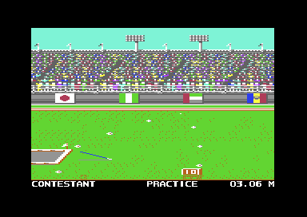<figcaption>The thrower's legs and throwing arm are three sprites from a table of 44 frames, copied into place each frame.</figcaption></figure>
  <p>The throw is measured from the foul line. A throw of 48 metres makes the crowd cheer (<a href="source-javelin.html#89AC"><code>cheer</code></a>), louder at 64, 80, and 96. Each round the players throw from the last to the first.</p>
</section>

<section id="equestrian">
  <p class="fig">10 · Show jumping</p>
  <h2 class="t">Pace, fences, and faults</h2>
  <p>Fire starts a count from FIVE to GO. Up starts the horse and quickens its pace through five steps, and down slows it (<a href="source-equestrian.html#25C1"><code>pace_up</code></a>). At each fence the ride (<a href="source-equestrian.html#1F46"><code>st_ride</code></a>) reads the fence's code from the course and whether the stick is pushed right, and decides the jump (<a href="source-equestrian.html#2645"><code>pick_jump</code></a>); left at the landing keeps the rider on. A horse brought in wrong refuses, and pulling down backs it away for another try.</p>
  <figure class="overview-shot">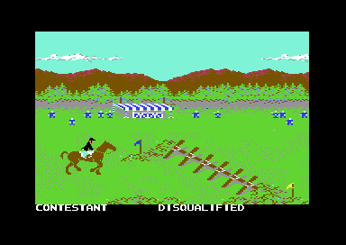<figcaption>The horse and rider, unpacked from 60 frames. The gallop's tune takes its note length from the pace, so the hoofbeats quicken as the horse speeds up.</figcaption></figure>
  <p>Faults are added by <a href="source-equestrian.html#25DF"><code>add_faults</code></a>: 20 for a refusal, 6 for a fall, and one for every second over 50. A rider is disqualified at 99 seconds or 100 faults. The clock adds 3 hundredths a frame (<a href="source-equestrian.html#2626"><code>clock_step</code></a>), so a game second takes 33 frames, about two thirds of a real second. This clock runs fast on any machine: the 50 seconds allowed before time faults begin are 33 real seconds on a European machine (28 on an American one), and the 99-second limit is 65 real seconds (<a href="discoveries.html#pal-clocks">Discoveries</a>).</p>
  <p>The course under the horse carries a code at each step of the approach to a fence, and <a href="source-equestrian.html#1F46"><code>st_ride</code></a> acts on it with the stick. Fire plays no part: the code reads it only to start the count and after a fall, though the manual says it makes a medium jump.</p>
  <div class="ft-scroll"><table class="ft-table">
    <thead><tr><th>Code</th><th>Stick right held</th><th>Stick right not held</th></tr></thead>
    <tbody>
      <tr><td>1</td><td>jumps</td><td>rides on</td></tr>
      <tr><td>2</td><td>jumps</td><td>jumps</td></tr>
      <tr><td>3</td><td>jumps</td><td>refuses</td></tr>
      <tr><td>4</td><td>refuses</td><td>refuses</td></tr>
      <tr><td>7</td><td>refuses, unless the horse has already refused here</td><td>rides on</td></tr>
    </tbody>
  </table></div>
  <p>Code 5 changes the field's character set and colours, and 0 rides on. When the horse jumps, <a href="source-equestrian.html#2645"><code>pick_jump</code></a> takes the jump's speed from a table for the fence and the pace.</p>
</section>

<section id="high-jump">
  <p class="fig">11 · High Jump</p>
  <h2 class="t">Where the jumper takes off</h2>
  <p>Each tap of right adds a quarter of a pixel a frame to the run's speed, and left halves it; up and down move the line the jumper runs along. Fire in the 36-pixel take-off zone jumps (<a href="source-high-jump.html#7973"><code>take_off</code></a>). The clearance is the value of the place in the zone, from <a href="source-high-jump.html#79E5"><code>zone_values</code></a>, plus a bonus for the speed from <a href="source-high-jump.html#7A0B"><code>speed_bonus</code></a>. The jump clears when the clearance reaches the bar's level, its height in 5-centimetre steps less 20. Then, in the flight, up held too early or let go too late knocks the bar off anyway.</p>
  <div class="plate" id="hjCalc">
    <label class="ft-lab" for="hjZone">Take-off place in the zone: <b id="hjZoneV"></b></label>
    <input class="ft-range" type="range" id="hjZone" min="0" max="35" value="18">
    <label class="ft-lab" for="hjSpeed">Speed, in quarters of a pixel a frame: <b id="hjSpeedV"></b></label>
    <input class="ft-range" type="range" id="hjSpeed" min="0" max="23" value="12">
    <label class="ft-lab" for="hjBar">The bar: <b id="hjBarV"></b></label>
    <input class="ft-range" type="range" id="hjBar" min="24" max="50" value="46">
    <canvas id="hjStrip" width="720" height="200" style="width:100%;max-width:720px;display:block;margin:10px 0" aria-label="The take-off zone: a column for each of its 36 places, as tall as the clearance from that place, with the bar's level drawn across"></canvas>
    <div class="ft-read" id="hjOut" aria-live="polite">Loading the event's tables…</div>
    <p class="cap">The tables are read from the event's listing. Each column is a place in the zone, from the end farthest from the bar on the left to the nearest on the right, as tall as the clearance a jump from there gets at the chosen speed. Solid columns clear the bar's level, the dashed line; outlined ones knock it off; the triangle marks the chosen place. The best places, 16 to 19, are worth 26, and speed adds at most 5, which a run reaches at speed 13. So where the jumper takes off counts for far more than how fast: the highest bar, 2.50 m (level 30), is cleared only from the middle of the zone.</p>
  </div>
  <p>In competition the bar goes 1.50, 1.75, 1.90, and 2.00 metres, then up 5 centimetres at a time to 2.50 (<a href="source-high-jump.html#77B3"><code>next_height</code></a>). Each height allows three tries, three failures in a row end a jumper's competition, and left passes a height, except from 2.45 m, where the stick goes straight to the run. A run past the zone is a fault that sends the jumper back to the same attempt without counting it. In practice the bar can be set from 1.20 to 2.50 m.</p>
  <figure class="overview-shot">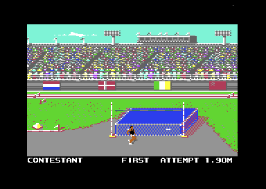<figcaption>The high jump. The crowd's cheer is louder the higher the bar.</figcaption></figure>
</section>

<section id="fencing">
  <p class="fig">12 · Fencing</p>
  <h2 class="t">Hold fire to attack</h2>
  <p>Without the button, the stick picks one of nine guards (<a href="source-fencing.html#1419"><code>set_guard</code></a>). With the button held, it steps, thrusts, or lunges. A thrust or lunge hits when the fencers are close enough, unless the other fencer's guard is in the same line, which parries it. Two hits at once cancel: HITS NULLIFY EACH OTHER. A fencer who steps off the end of the piste is warned once (<a href="source-fencing.html#15F8"><code>piste_warning</code></a>), and another step back gives the other fencer a hit.</p>
  <figure class="overview-shot">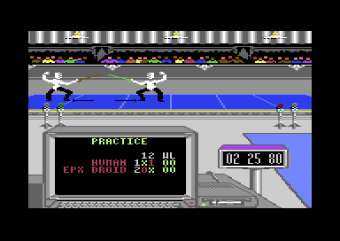<figcaption>The bout. The board above counts the hits, with each fencer's name and country.</figcaption></figure>
  <p>A bout is won with five hits, or with the most hits when the three-minute clock runs out. A tie on time goes to sudden death (<a href="source-fencing.html#2C88"><code>to_sudden_death</code></a>). The computer's fencer, the droid, plays at four skill levels or at random (<a href="source-fencing.html#2E0B"><code>skill_menu</code></a>). With two joysticks every player fences every other once; with one, each fences the droid at skill 3.</p>
</section>

<section id="cycling">
  <p class="fig">13 · Cycling</p>
  <h2 class="t">Turning the stick like a pedal</h2>
  <p>Every second frame the routine <a href="source-cycling.html#A48D"><code>pedal</code></a> reads the stick's direction as a quarter of the crank's turn, right, down, left, and up, and each read in the quarter the crank is in adds 1 to the speed, up to 16 (<a href="source-cycling.html#A4DF"><code>match_crank</code></a>). The speed falls by 1 on a countdown that is shorter the faster the rider goes. Two riders race 200 metres, each in a half of the screen, with the other rider drawn in red at the distance between them.</p>
  <figure class="overview-shot">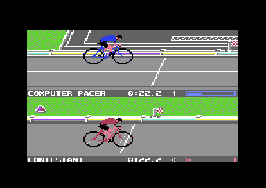<figcaption>The split screen: eleven raster interrupts a frame and two screens drawn in turn. The tune plays while the riders wait to press their buttons.</figcaption></figure>
  <p>The computer's rider uses the same rubber band as Rowing's pacer (<a href="source-cycling.html#A69C"><code>pacer_rubber_band</code></a>): its skill rises while it trails.</p>
</section>

<section id="kayaking">
  <p class="fig">14 · Kayaking</p>
  <h2 class="t">Fifteen gates down the river</h2>
  <p>Up strokes forward and down backward, each stroke on the other side of the boat; left and right sweep the paddle to turn the kayak through 16 headings (<a href="source-kayaking.html#7DA8"><code>paddle_push</code></a>). The hull is four sprites, and when one touches the bank or a rock the kayak stops (<a href="source-kayaking.html#7752"><code>bump</code></a>). Each gate is judged as the kayak leaves it (<a href="source-kayaking.html#7847"><code>judge_gate</code></a>): SUCCESSFUL, or CROSSED MORE THAN ONCE, MISSED GATE, FACED WRONG DIRECTION, or ENTERED FROM WRONG SIDE, and each fault adds 20 seconds (<a href="source-kayaking.html#78D5"><code>gate_fault</code></a>). Most gates are passed facing the way the course runs, but gates 6, 10, and 13 are passed facing back toward the start: <i>Zzap!64</i> called them reverse and upstream gates.</p>
  <figure class="overview-shot">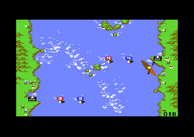<figcaption>The river from above. The clock in its sprite is the chip's own time-of-day clock (<a href="source-kayaking.html#73E2"><code>draw_clock</code></a>).</figcaption></figure>
  <p>The run is timed by CIA 2's time-of-day clock, set for 60 Hz mains, and ends past the finish or at 9:59. The whole river is drawn on the <a href="levels.html#river">Maps</a> tab.</p>
</section>

<section id="swimming">
  <p class="fig">15 · Swimming</p>
  <h2 class="t">The first game's pool, on the second disk</h2>
  <p>Side 2 also holds Summer Games' Freestyle Relay and 100 metres Freestyle, the menu's route to the first game's events. Each player presses their button to be ready, then comes MARK, SET, and GO! Joystick right dives; leaving before GO! is a FALSE START, and the third is a FAULT (<a href="source-swimming.html#E66D"><code>false_start</code></a>). In each half of a stroke the button is sampled three times (<a href="source-swimming.html#FB99"><code>stroke</code></a>): one press at the first sample gains 2 speed, while none or all three lose 2. At the far wall left starts a flip turn (<a href="source-swimming.html#FB4F"><code>start_turn</code></a>), and the glide under water is longer the better the turn was timed.</p>
  <figure class="overview-shot">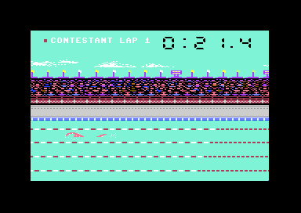<figcaption>The relay. The 100 metres is two lengths, the relay eight, with the next swimmer dived in by the player at each hand-over.</figcaption></figure>
  <p>The camera scrolls to follow, and a swimmer left behind is pulled back into view (<a href="source-swimming.html#FC9A"><code>keep_up</code></a>). The clock adds a tenth every six frames up to 9:59.9 (<a href="source-swimming.html#EF46"><code>clock_tick</code></a>).</p>
</section>

<section id="closing">
  <p class="fig">16 · Closing ceremony</p>
  <h2 class="t">Jet pack, blimp, and fireworks</h2>
  <p>One routine (<a href="source-closing.html#1068"><code>run_stage</code></a>) drives eight stages. The sky darkens through nine colours while the floodlights flicker on (<a href="source-closing.html#16F8"><code>sky_colour</code></a>), a jet-pack flyer crosses and turns (<a href="source-closing.html#1278"><code>flyer</code></a>), the flame on the cauldron dies (<a href="source-closing.html#1234"><code>flame_dies</code></a>), and the Epyx blimp passes. Fireworks of eight kinds burst at random (<a href="source-closing.html#177C"><code>new_firework</code></a>), then the blimp passes again and again, with a banner scrolling along it (<a href="source-closing.html#1AC9"><code>banner</code></a>). Four tunes play in turn, each started when the last has ended (<a href="source-closing.html#1503"><code>next_tune</code></a>); <i>Zzap!64</i> heard <i>Ride of the Valkyries</i> and the <i>1812 Overture</i> among them.</p>
  <figure class="overview-shot">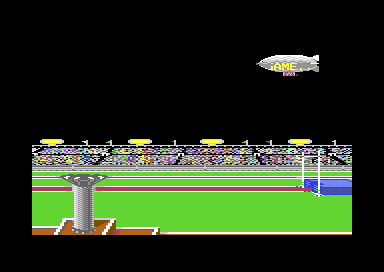<figcaption>The blimp. Its banner advertises <a href="discoveries.html#banner">Winter Games and Epyx's other games</a>.</figcaption></figure>
</section>
</main>
<script src="../../lib/c64.js"></script>
<script>
(function () {
  const $ = id => document.getElementById(id);
  if (typeof C64 === 'undefined') { $('hjOut').textContent = 'This widget needs the site\'s shared scripts: open the page from the built site.'; return; }
  C64.load('parts/high-jump/listing.json').then(({ ram }) => {
    const zone = ram.subarray(0x79E5, 0x79E5 + 36), bonus = ram.subarray(0x7A0B, 0x7A0B + 24);
    function show() {
      const z = +$('hjZone').value, s = +$('hjSpeed').value, h = +$('hjBar').value;
      const level = h - 20, c = zone[z] + bonus[s];
      $('hjZoneV').textContent = z + ' of 0 (farthest from the bar) to 35 (nearest)';
      $('hjSpeedV').textContent = s;
      $('hjBarV').textContent = (h * 5 / 100).toFixed(2) + ' m, level ' + level;
      $('hjOut').textContent = 'Place ' + zone[z] + ' + speed ' + bonus[s] + ' = clearance ' + c + ' against level ' + level + ': ' +
        (c >= level ? '✓ the jump clears the bar, if the flight is timed right.' : '✗ the jumper knocks the bar off.');
      const cv = $('hjStrip'), g = cv.getContext('2d'), W = cv.width, H = cv.height, cw = W / 36, k = (H - 40) / 32;
      const ink = getComputedStyle($('hjCalc')).color || '#222';
      g.clearRect(0, 0, W, H); g.lineWidth = 2;
      for (let i = 0; i < 36; i++) {
        const v = zone[i] + bonus[s], hgt = v * k, x = i * cw + 2, y = H - 24 - hgt;
        g.strokeStyle = ink; g.fillStyle = ink;
        if (v >= level) g.fillRect(x, y, cw - 4, hgt); else g.strokeRect(x + 1, y + 1, cw - 6, Math.max(0, hgt - 2));
      }
      const ly = H - 24 - level * k; g.setLineDash([8, 6]); g.strokeStyle = ink; g.beginPath(); g.moveTo(0, ly); g.lineTo(W, ly); g.stroke(); g.setLineDash([]);
      const mx = z * cw + cw / 2; g.fillStyle = ink; g.beginPath(); g.moveTo(mx, H - 20); g.lineTo(mx - 8, H - 4); g.lineTo(mx + 8, H - 4); g.fill();
      g.font = '14px "IBM Plex Mono", monospace'; g.textAlign = 'left'; g.fillText('level ' + level, 4, ly - 6);
    }
    ['hjZone', 'hjSpeed', 'hjBar'].forEach(id => $(id).addEventListener('input', show));
    show();
  });
})();
</script>
<footer style="margin:16px 0 0;padding:22px var(--gx) 0;border-top:1px solid #e0ded8;font-family:'IBM Plex Mono',ui-monospace,Menlo,monospace;font-size:12px;color:#80838a"><a href="https://github.com/gamesexplained/gamesexplained" style="color:#1f5fa8;text-decoration:none">GitHub</a> · <a href="https://discord.gg/3V9GWyRDWV" style="color:#1f5fa8;text-decoration:none">Discord</a><br>© Games Explained contributors. Write-ups, facts and symbol maps are available under <a href="https://creativecommons.org/licenses/by-sa/4.0/" style="color:#1f5fa8;text-decoration:none">CC BY-SA 4.0</a>; code under <a href="https://opensource.org/licenses/MIT" style="color:#1f5fa8;text-decoration:none">MIT</a></footer>
